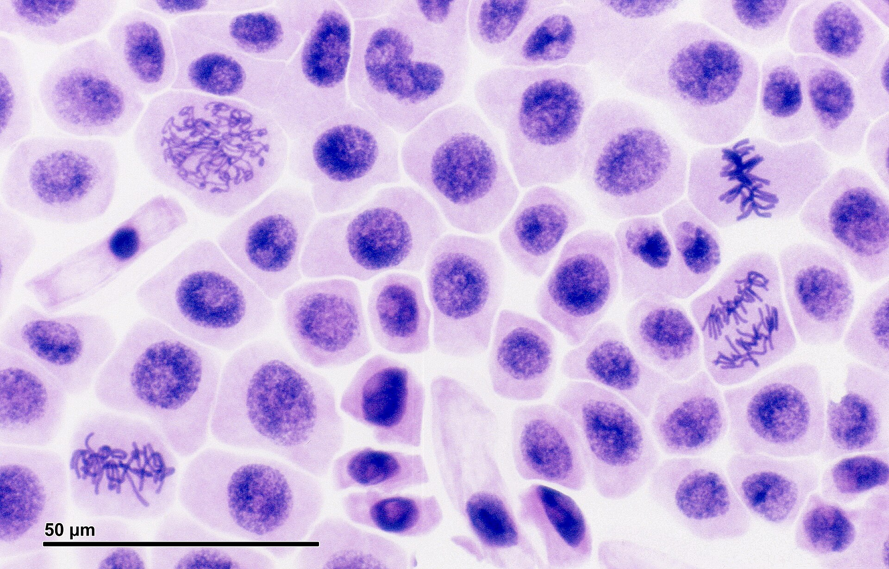

Pas 1 · Posa els passos del protocol en ordre
Has faltat al laboratori? Aquí el fas tu. Tria, d'un en un, quin és el pas següent. Si t'equivoques, llegeix la pista.
⚠️ Al laboratori real: bata, guants i ulleres. L'orceïna A és àcida i taca: si te'n cau a la pell, aigua abundant i avisa el docent.
Passos desordenats
El teu protocol
Pas 2 · Mira la preparació i classifica les cèl·lules
Fes clic a cada cercle i digues en quina etapa és la cèl·lula. Quan les tinguis totes, prem Comprova. L'app et calcula l'índex mitòtic.
InterfaseNucli rodó i granulat. No es veuen cromosomes.
ProfaseUn cabdell de fils dins del nucli.
MetafaseCromosomes en una franja al mig.
AnafaseDos grups que se separen cap als pols.
TelofaseDos nuclis petits, un a cada banda.

Imatge: Josef Reischig · CC BY-SA 3.0 · Wikimedia Commons. Barra d'escala: 50 µm.
0/0Classificades
0Interfase
0En divisió
–Índex mitòtic